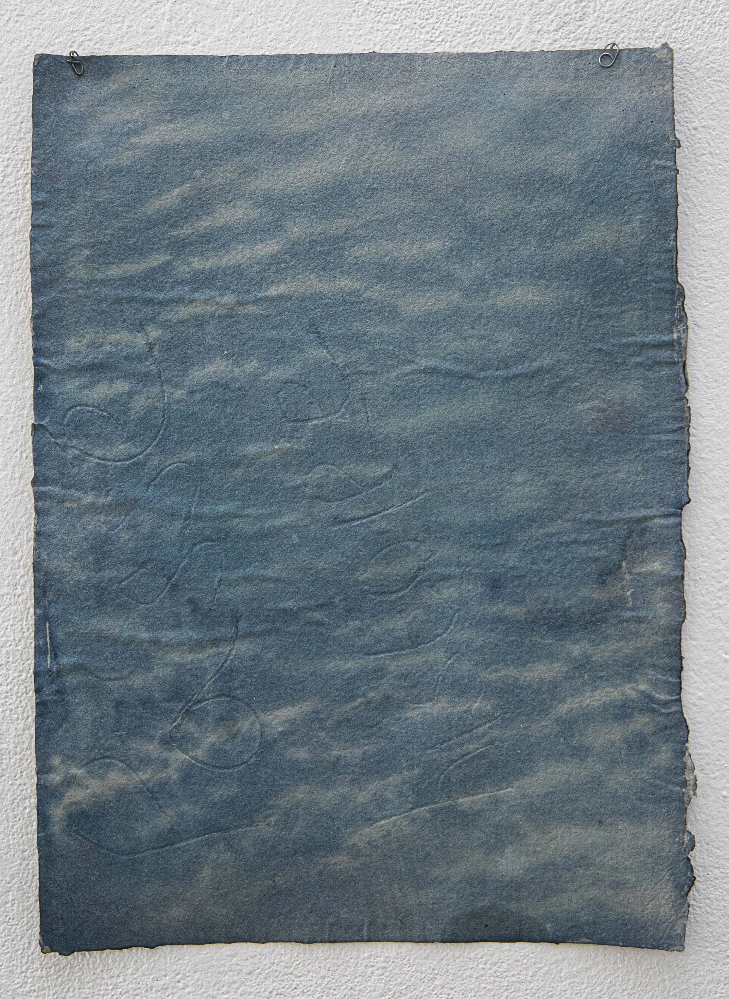

Reflet d’eau
Cette image est réalisée à partir d’une photographie d’écorce, transposée en cyanotype sur un papier que j’ai fabriqué à la main. Cette pratique rassemble plusieurs enjeux présents dans mon travail : la forme obtenue peut évoquer un cours d’eau, un nuage ou encore la surface de la terre.
Le procédé du cyanotype fait lui-même appel à des éléments naturels simples, notamment l’eau et la lumière du soleil. Ces éléments participent directement à l’apparition et à la transformation de l’image.
Dans mon travail, l’eau devient ainsi un élément central reliant différents cycles de transformation.